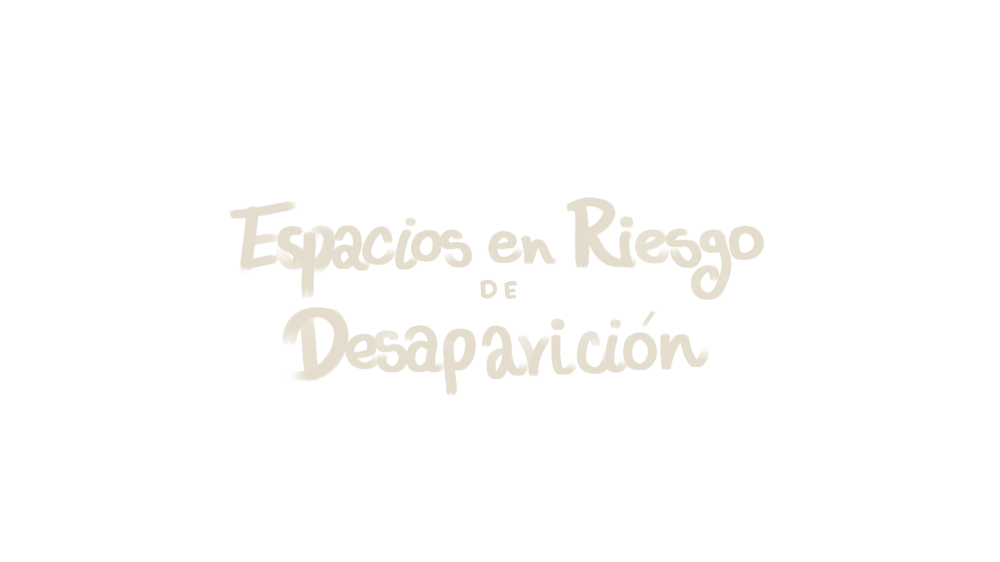

Evidencias de Campo



Hay lugares que no desaparecen de un día para otro, sino que se van borrando poco a poco.
En esta página web, van a ser expuestos los resultados de las investigaciones hechas al pequeño pueblo. Exposición de espacios, territorios y tradiciones, que más allá de su apariencia física, guardan historias, encuentros y significados que han construido la identidad del municipio a lo largo del tiempo, y sin embargo, la gente, con el paso de los años, han dejado desvanecer día tras día. Bienvenido a esta exploración de lo qué es y, alguna vez fue, Santafé.
Santa Fe de Antioquia no está perdiendo solo espacios. Está perdiendo historias. Detrás de cada lugar abandonado, transformado o en ruinas, hay recuerdos, encuentros, formas de vivir y de habitar el territorio que poco a poco se desvanecen. Sitios que antes estaban llenos de vida hoy existen en el olvido, no porque hayan dejado de ser importantes, sino porque dejaron de ser vistos.
Este proyecto ha permitido entender que el valor de estos espacios no está únicamente en su arquitectura, sino en lo que representan para las personas: en la memoria, en las experiencias y en la identidad que construyen. Cuando un lugar desaparece, no solo cambia el paisaje, también se rompe una parte del vínculo entre la comunidad y su historia. Por eso, preservar no es solo restaurar estructuras. Es escuchar, reconocer y darle lugar a aquello que aún vive en el recuerdo de la gente. Es evitar que el desarrollo borre lo que nos define.
Santa Fe de Antioquia sigue siendo un territorio lleno de memoria. La pregunta es si vamos a dejar que desaparezca… o si vamos a decidir mirarla antes de que sea tarde.